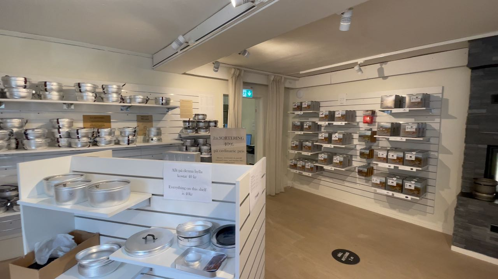
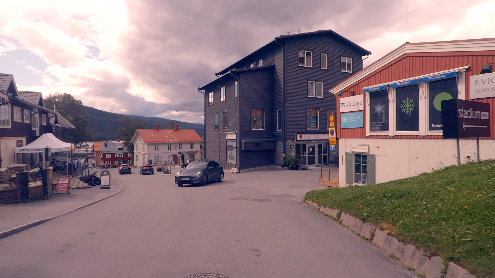
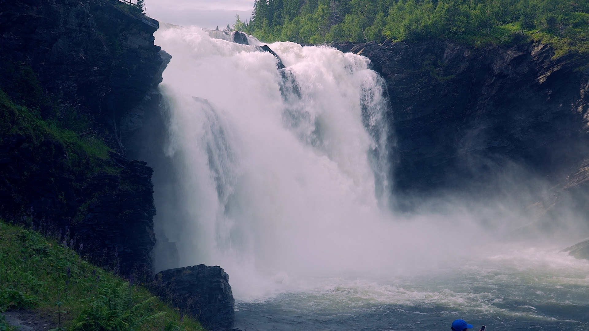
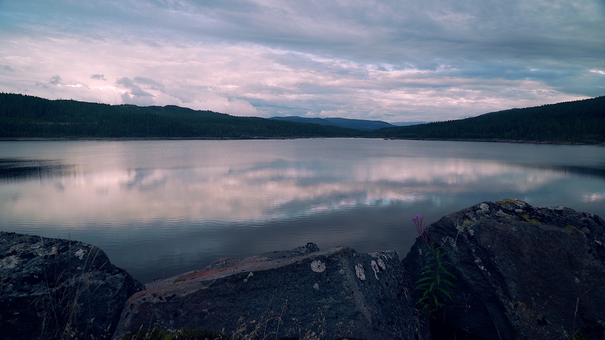

Trangian tehtaanmyymälän kautta Ruotsin korkeimmalle koskelle
Aamu valkeni aurinkoisena Östersundin leirintäalueella. Aamupalan jälkeen pakkasimme leirin ja naputtelimme navigaattoriin suunnaksi Åren. Ajettavaa oli vain noin 100 kilometrin verran, joten tiedossa oli leppoisa päivä ja tavoitteena oli tutustua Åren ympäristöön.
Trangian tehtaanmyymälä
Matka sujui rennossa tunnelmassa mukavassa kelissä, kunnes yhtäkkiä huomasimme Trangian tehtaanmyymälän tien laidassa. Tilanne tuli vastaan niin nopeasti, että en ehtinyt siihen reagoimaan. Teimme u-käännöksen pienen mökkitien risteyksessä ja ajoimme myymälän pihaan.

Ystävällinen myyjä otti meidän heti vastaan kun astuimme ovesta sisään. Hän kertoi, että esille on kaikki Trangian tuotteen ja neuvoi mistä löytyi mitäkin. Hyllyiltä todellakin löytyi aivan pienintäkin nippeliä myöden kaikki, mitä Trangia valmistaa. Kun astelimme myymälästä ulos oli kainalossani 2 litran astia, kahva ja kansi.
Me käytetään Trangiaa luonnossa retkeillessä mutta myös nykyään usein myös autossa. Kattilat ja pannut ovat sopivan kokoisia retkiauton pienelle liedelle. Ruoan laittamisen jälkeen ne jäähtyvät tosi nopeasti. Ne on siten helppo puhdistaa ja laittaa takaisin kaappiin. Keittiö pysyy näin hyvässä järjestyksessä, mikä on tärkeää, kun tilat ovat pienet.
Lounastauko Åressa
Hetken ajon jälkeen saavuimme Åreen ja ajoimme kylän läpi samalla katsellen paikkoja ja pysäköintimahdollisuuksia. Suomalainen Aimo-park oli saanut myytyä maksusysteeminsä koko kylään. Latasin sovelluksen puhelimeeni ja sillä maksaminen onnistui hyvin, kunhan olin ensin vaihtanut käyttäjäprofiilista maan Suomesta Ruotsiin.
Pidimme pienen lounastauon ja lähdimme ajamaan kohti Tännforssenin vesiputousta.

Tännforssen on Ruotsin korkein vesiputous
Tie kohti Tännforssenia kiipesi korkealle ja lopulta saavuimme parkkipaikalle. Pysäköinti maksoi 3 euroa. Ravintolan tuntumassa oli muutamalle autolla matkaparkki. Sähkö, suihku ja vessa oli majoittujille tarjolla. Vesisäiliötä tai kemssaa ei päässyt tyhjentämään.
Parkkipaikalta oli vain 200 metrin matka putoukselle. Alajuoksulle vievä polku oli jyrkkä. Tännforssenissa virtaa vettä 790 kuutiometriä sekunnissa kevään tulvien aikaan. En tiedä mitä virtaama on keskellä kesää, mutta todella vaikuttava veden voima oli joka tapauksessa elokuussakin.

Tännforssen oli kaikkiaan vaikuttava kokemus. Pudotusta oli 38 metriä ja leveyttä 60 metriä ja veden pauhua pääsi ihastelemaan aivan vierestä.
Turisteja varten vesiputouksen läheisyyteen rakennettiin ensimmäinen mökki 1906 eli kauan ennen kuin Åressa näkyi ensimmäisiä hiihtoturisteja. Alueen turismi on siis alkanut putouksen luota. Tännforssenilla on tehty myös kaikenlaisia sirkustemppuja. Vuonna 1953 pari huimapäätä ylitti putouksen polkupyörällä ajamalla vaijeria pitkin.
Yöksi Norjaan
Tännforssenin ihmettelyn jälkeen lähdimme ajamaan kohti Norjaa. Ylitimme rajan ja jäimme puskaparkkiin Meråkerin kylän laidalle. Rauhallinen paikka luonnon helmassa takasi hyvä yöunet.
